2015
The Beginning
Billie released “Ocean Eyes,” a song created with her brother Finneas. The track gained attention online and introduced her to a growing audience.
THE ARTIST. THE VOICE. THE LEGACY.
Welcome to a world of music, creativity, and individuality. Explore the life, career, albums, and artistic journey of one of the most influential musicians of her generation.
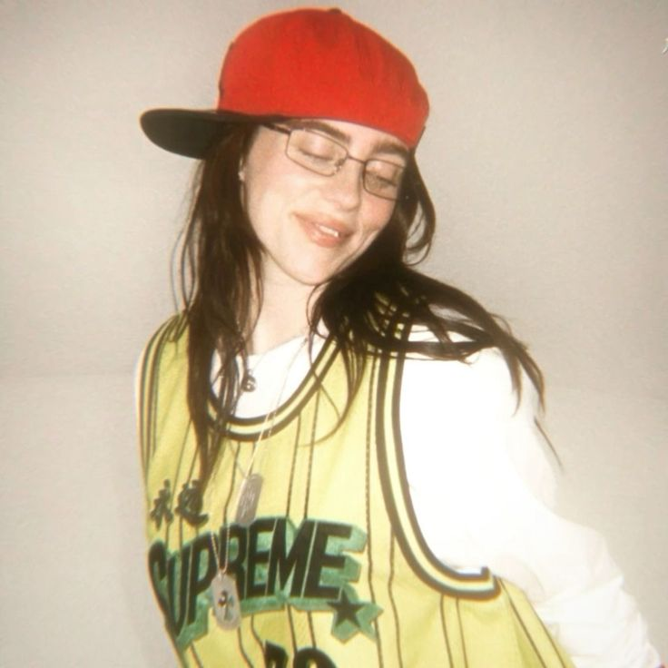
Billie Eilish Pirate Baird O'Connell is an American singer and songwriter known for her unique musical style, distinctive voice, and creative visual identity.
Born on December 18, 2001, in Los Angeles, California, Billie grew up in a creative family. Her parents, Maggie Baird and Patrick O'Connell, encouraged artistic expression from an early age.
Her breakthrough came in 2015 when the song “Ocean Eyes,” written and produced with her brother Finneas, began attracting attention online.
Since then, Billie has developed into a global music superstar, earning major awards and building a reputation for music that explores emotions, identity, and personal experiences.
Born
Breakthrough
Academy Awards
From uploading a song online to becoming one of the world's biggest music artists.
Billie released “Ocean Eyes,” a song created with her brother Finneas. The track gained attention online and introduced her to a growing audience.
Her debut EP helped establish her sound and introduced songs such as “Bellyache” and “idontwannabeyouanymore.”
Her debut studio album became a major success. “bad guy” became a worldwide hit, and Billie earned recognition at the Grammy Awards.
Billie won the four major general-field Grammy categories in one night: Album of the Year, Record of the Year, Song of the Year, and Best New Artist.
Her second studio album explored themes of fame, relationships, personal growth, and emotional vulnerability.
Billie and Finneas created a song for the Barbie movie. The track received major recognition, including an Academy Award.
Her third studio album brought together different musical styles and included “Lunch,” “Birds of a Feather,” and “Wildflower.”
Every album represents a different chapter in Billie's artistic journey.
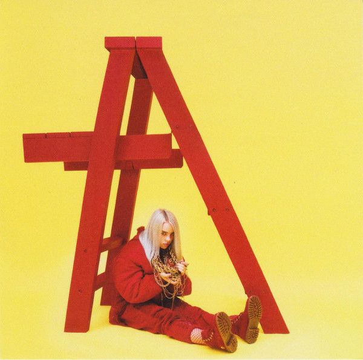
Her debut EP introduced her alternative pop sound through songs like “Ocean Eyes,” “Bellyache,” and “idontwannabeyouanymore.”
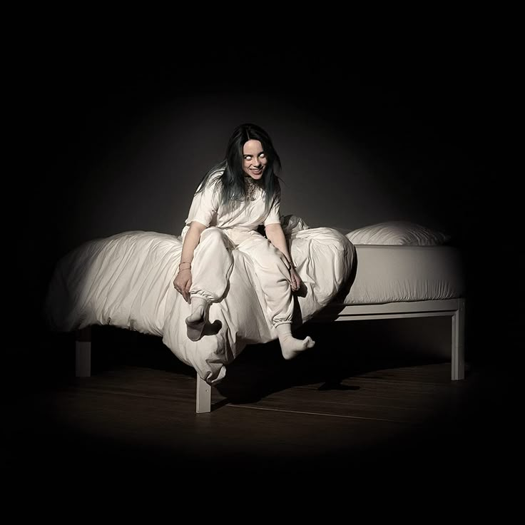
A dark, experimental pop album that established Billie as a major global artist.
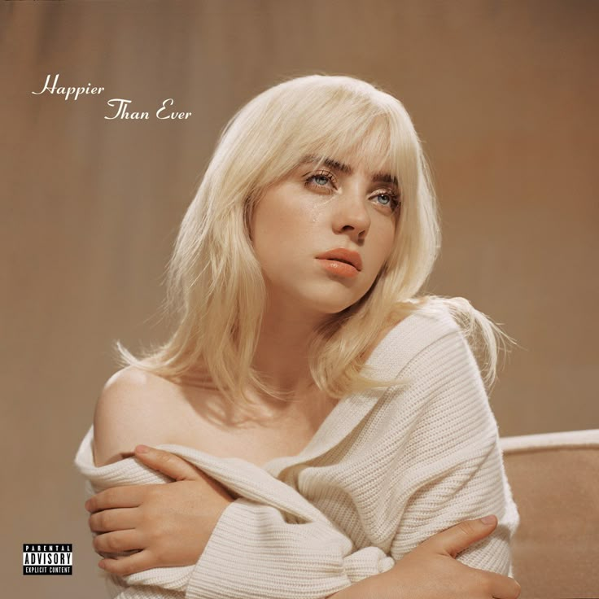
An emotional album exploring personal experiences, relationships, and growth.
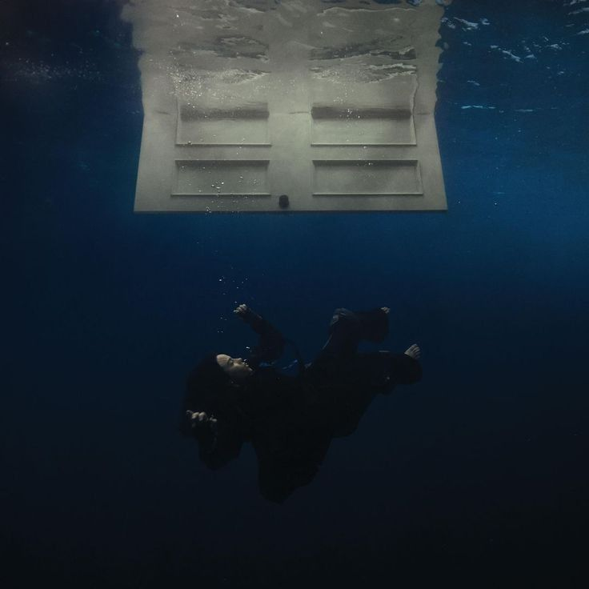
A genre-blending album featuring “Birds of a Feather,” “Lunch,” and “Wildflower.”
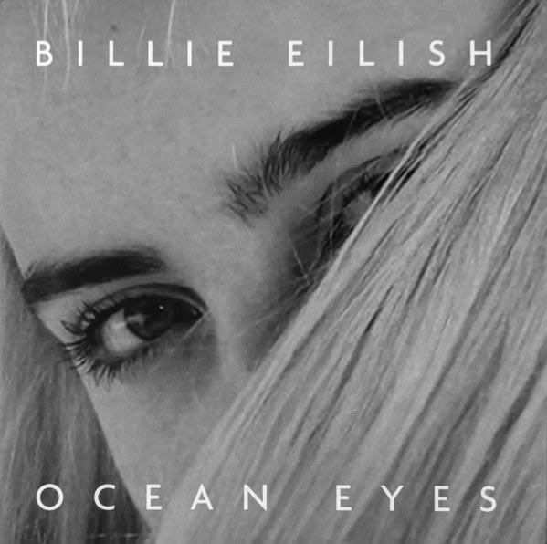
The song that introduced Billie to a wider audience and helped launch her career.
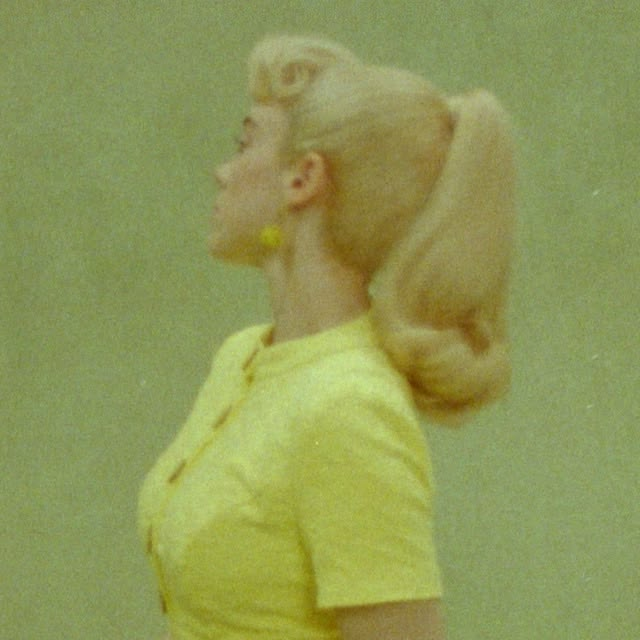
A deeply emotional song created for the Barbie movie soundtrack.
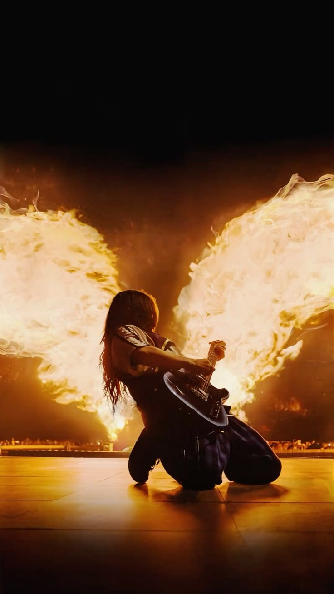
Billie's music combines alternative pop, electronic production, atmospheric sounds, and intimate vocals.
Her collaborations with Finneas have helped create a distinctive sound that moves between quiet, emotional moments and powerful musical arrangements.
Ocean Eyes
2015bad guy
2019everything i wanted
2019Happier Than Ever
2021What Was I Made For?
2023Birds of a Feather
2024A visual collection celebrating Billie's artistic identity, performances, and unforgettable moments.
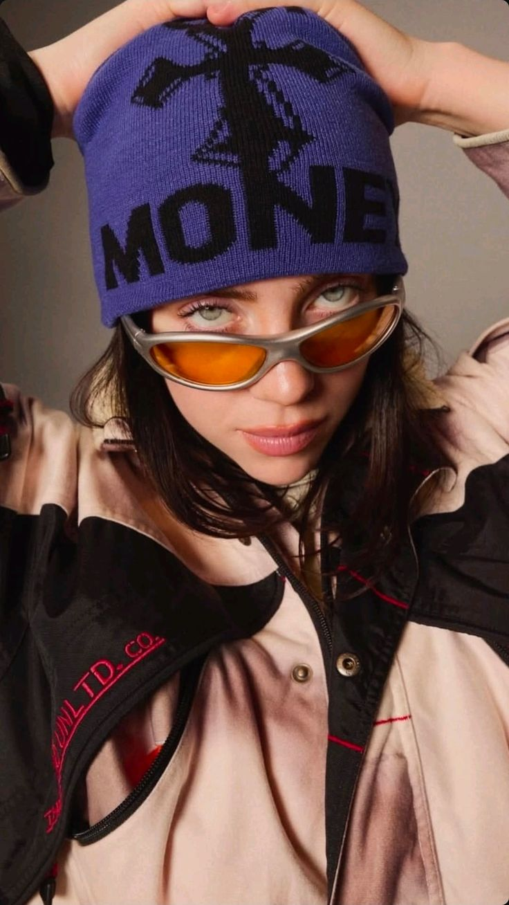
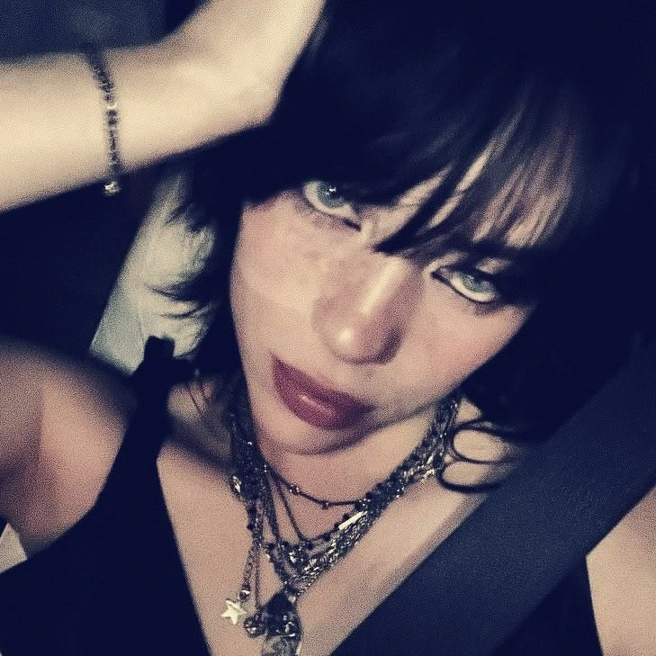
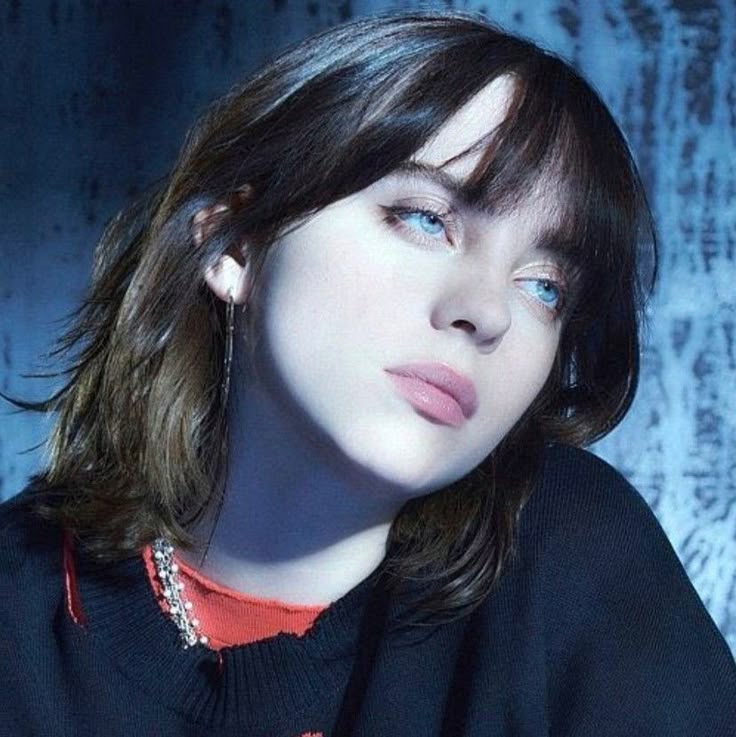
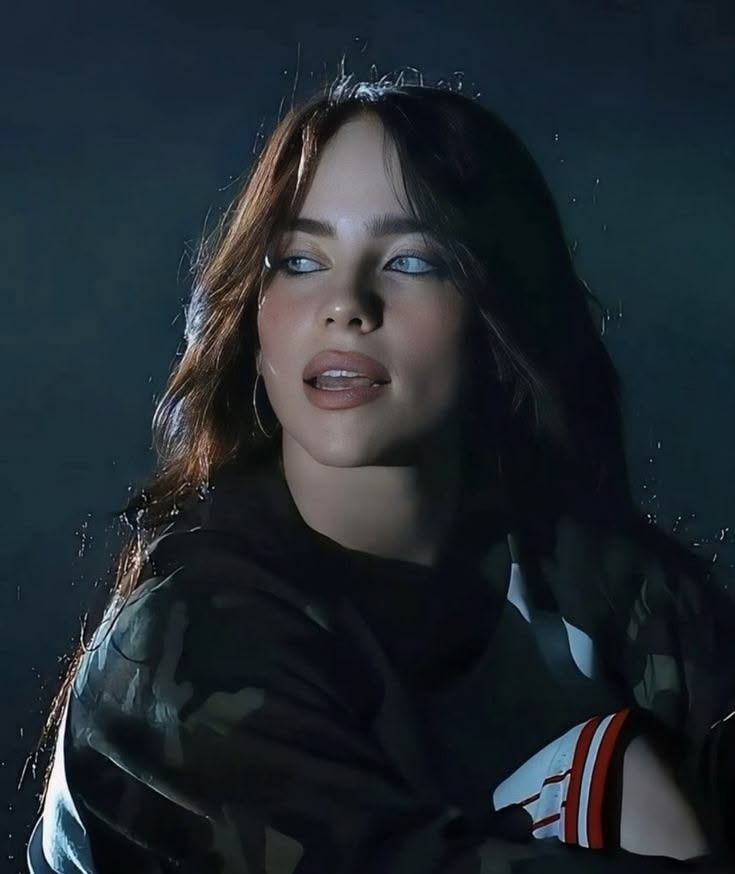
Recognition for her music, creativity, and impact on the entertainment industry.
Billie has received multiple Grammy Awards, including Album of the Year, Record of the Year, Song of the Year, and Best New Artist.
She won Academy Awards for Best Original Song with “No Time to Die” and “What Was I Made For?”
Her music has reached audiences around the world, making her one of the most recognizable artists of her generation.
Her songs and albums have achieved major international chart success.
Billie has performed on major stages around the world, including festivals and international tours.
Her distinctive sound, fashion, and visual identity have influenced modern pop culture.
Billie Eilish is known for expressing herself through fashion, music videos, photography, and visual storytelling.
Her oversized clothing became an important part of her early public image. Over time, her style has continued to evolve, reflecting different periods of her artistic journey.
Her music videos and album visuals often use striking colors, unusual imagery, and cinematic concepts.
This combination of music and visual creativity has helped make Billie recognizable beyond the world of music.
Billie's live performances bring her music to life through powerful vocals, visuals, and unforgettable moments.
Supporting her debut studio album.
A world tour supporting her debut album.
A global tour celebrating her second studio album.
A tour supporting her third studio album.
THE WORLD OF BILLIE EILISH